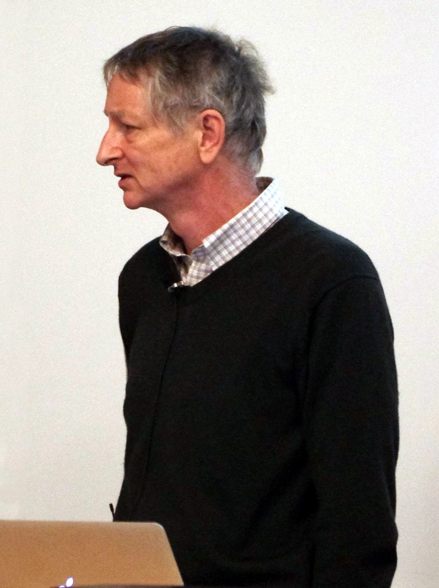
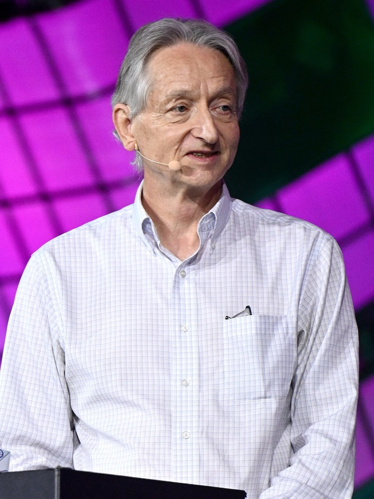
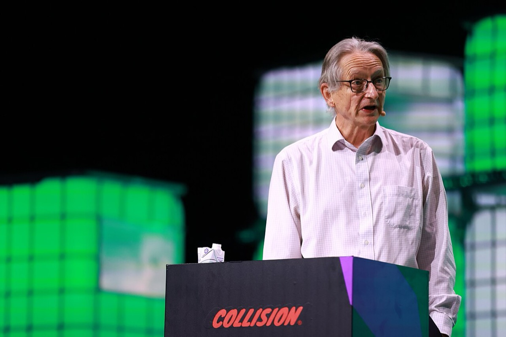
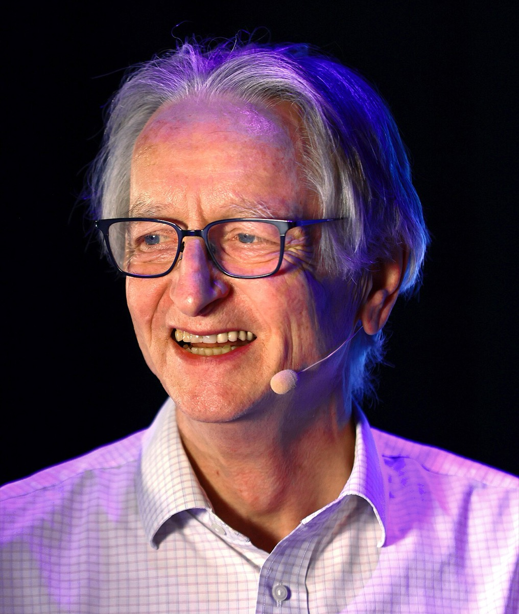
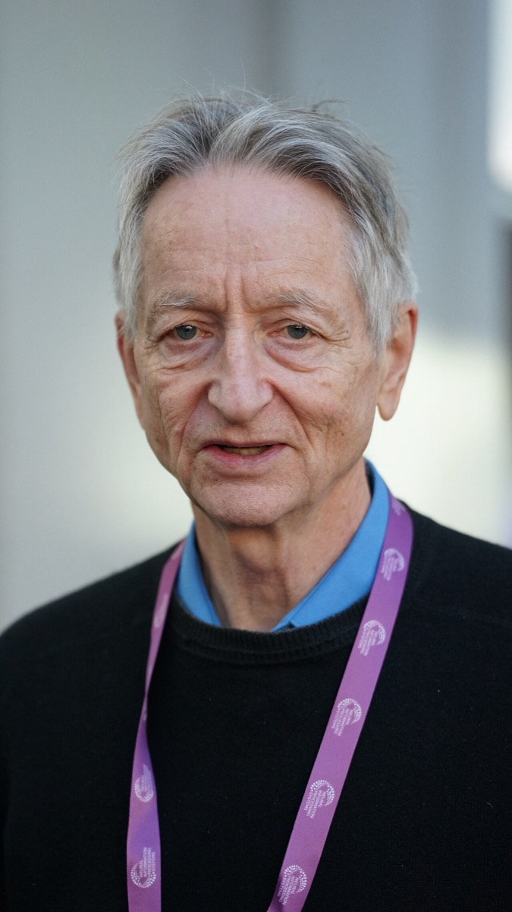
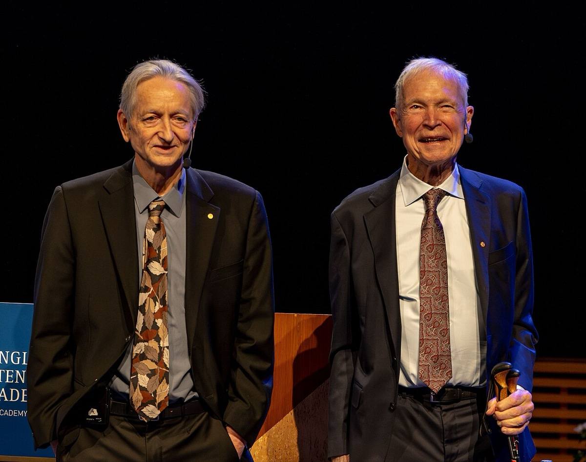
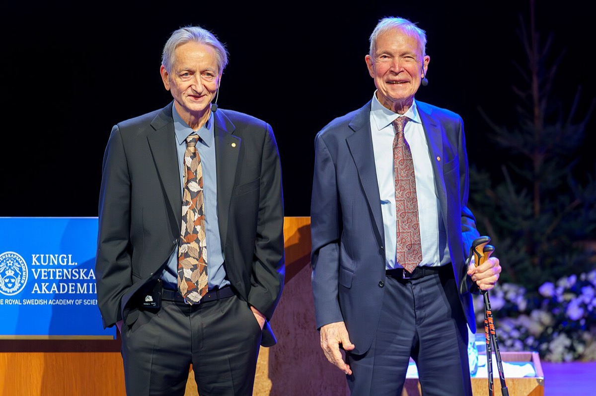
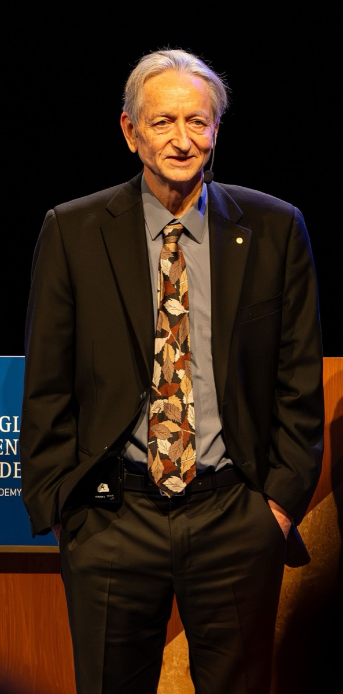
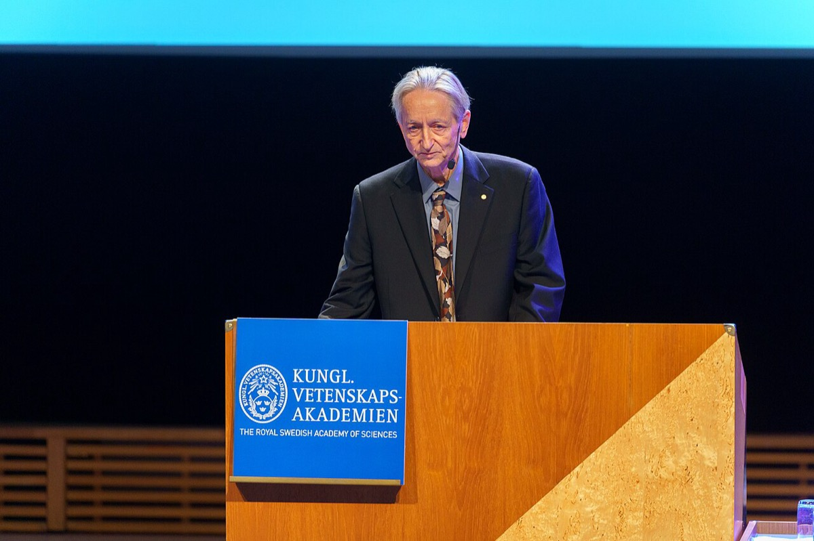

home / people / ジェフリー・ヒントン
ジェフリー・ヒントン — ニューラルネットの冬からノーベル物理学賞まで
Geoffrey Everest Hinton 1947.12.6 – ／トロント大学 名誉教授・元 Google VP and Engineering Fellow
深層学習 計算コスト AlexNet
Google退社 チューリング賞 ノーベル物理学賞
1947年12月6日イギリス・ウィンブルドン生まれ。1986年の Nature 共著で誤差逆伝播を示し、2012年の AlexNet で GPU 上の深い畳み込みが産業の基準点になった。本ページの軸は2つである。ヒントン本人が1990年代の一次論文を含む系列でニューラルネットを保持し、計算・データ到達後に AlexNet と DNNresearch 売却へ進んだ経路を固定すること。2023年5月の Google 退社について、主因が GPT-4 後の能力評価の更新かを検証することである。
再作成日 2026年11月11日。数値の基準日は同日。存命の科学者であるため、出典のない私生活・人物評は書かない。年表の満年齢は生年月日1947年12月6日からの年差で算出する。家系の項目は「生誕N年前」と表示する。
① 概要Overview
AlexNet top-5
15.3%2012 ILSVRC・2位26.2%
AlexNet 学習計算量
4.7×1017 FLOP・Epoch推計
Google退社公表
2023.5.1ChatGPT後約5か月
先に結論を書く。
1つ目。本人の経路は「保持 → CIFAR → GPU 上の AlexNet → 売却」である。 1986年の Nature 共著のあと、1995年の Helmholtz Machine と2002年の Products of Experts が一次論文として残る。2004年から CIFAR NCAP を主導し（5年 CAD 250万ドル（約2.1億円））、2012年に弟子とともに GTX 580×2 で AlexNet を公開し（top-5 15.3%対26.2%）、同年12月の DNNresearch オークションで Google へ売却した。分野の冬の主因は公開系列だけでは特定できない。理論の不足と計算とデータと査読が競合する。到達前の保持と到達後の価格発見という順序は、この一次系列で固定できる2 37 38 5 6 32
2つ目。退社の主因を能力評価の更新に固定できるかは、判定不能である。 ChatGPT 公開は2022年11月30日、GPT-4 は2023年3月14日、退社公表は2023年5月1日である。MIT Technology Review と Computerworld は能力評価の更新（GPT-4 後の sudden flip）を記録する。同時に発言自由度と年齢による技術作業の限界も並列で挙げる。前後関係は GPT-4 後と整合する。寄与の大小を切る決定過程の一次記録と在籍中比較ログが無いため、主因の特定は判定不能とする8 9 33 35 36
主張
読者と判断： ヒントンの研究選択を、「査読が戻った瞬間の乗り換え」と読むか、「計算・データ到達まで手法を保持し、到達後に売却した経路」と読むかを決められる。Google 退社については、主因を能力評価の更新・発言自由度・年齢のいずれかに固定できるかを、公開インタビューの範囲で判定できる。
主張： ヒントンの公開経路は次の順序である。1986年 Nature 共著のあと1990年代もニューラルネット系の一次論文を出す。2004年から CIFAR NCAP を主導して人材とアルゴリズムを保持する。2012年に GPU 上の AlexNet を公開したうえで、同年の DNNresearch オークションで Google へ売却する。これは到達前の保持と到達後の価格発見であり、「査読が突然正しくなった瞬間に乗り換えた」経路ではない。反証条件： 1990年代にニューラルネット系の共著・単著が途切れ、他手法への乗り換えを本人が一次で宣言した記録がある。または DNNresearch の売却合意が ILSVRC-2012／AlexNet の公開結果より前に成立した記録がある。判定： 支持。1990年代の直接証拠は Helmholtz Machine（Neural Computation, 1995）と Products of Experts（Neural Computation, 2002）の一次論文である。その後の根拠は CIFAR ディレクター期と AlexNet 論文である。加えて Metz のオークション再構成と2013年3月の大学発表の時系列である。分野の冬の主因の特定は判定不能として残す。主張： ヒントンの Google 退社の主因は、GPT-4 公開（2023-03-14）後の能力評価の更新である。年齢による技術作業の限界や、Google の事業と衝突せず安全を語るための経路変更は、主因ではない。反証条件： 退社決定が GPT-4 公開より前に確定した一次記録がある。または本人が主因を年齢もしくは発言自由度のみと特定し、能力評価の更新を退社理由から除外した一次記録がある。または在籍中（2013–2022）に同型の能力評価を既に確定させており、GPT-4 が契機でないことを示す比較コーパスがある。判定： 判定不能。MIT TR と Computerworld は能力更新・発言自由度・年齢を並列で挙げる。前後関係は GPT-4 後と整合する。寄与の大小を切る決定過程の一次記録と在籍中比較ログが無い。判定には次が要る。退社を決断した日付の一次記録。在籍中の同型インタビュー全件。本人による理由の順位付け。
分解： 物理的制約は GPU メモリと学習時間（FLOP）。データ制約は教師あり画像の規模。お金の流れは公的研究費（CIFAR）・企業研究契約・スタートアップ売却（DNNresearch）。利得の帰属は大学・Google・弟子の起業先。法と強制力は査読・採用・軍事研究資金の忌避と、雇用契約下の発言制約。時間は本人の保持期間と、GPT-4 公開から退社公表までの週数である。
② 検証用の時系列Chronology for the Two Claims 主張1（保持から売却）と主張2（退社の主因）の検証に使う日付を中心に並べた。各項目は事実、具体、なぜ効いたかの3層である。期のボタンで絞り込める。日付の右は、その時点の満年齢である。
該当する項目がない。
③ 主張1の検証 — 保持から売却までの順序Hold, Then Sell After AlexNet 主張1が測るのは、本人の行動順序である。1986年の Nature 共著のあと、1990年代にもニューラルネット系の一次論文を出したか。CIFAR NCAP で人材とアルゴリズムを維持したあと、2012年に AlexNet を公開し、同年の DNNresearch オークションで Google へ売却したか。家系と学位は前提として短く置く。
ACM Turing 受賞者ページは、祖先に George Boole、父に Howard Everest Hinton（昆虫学者）を置く。1970年にケンブリッジで実験心理学 BA、1978年にエディンバラ大学で AI の PhD（指導教員 Christopher Longuet-Higgins）。指導教員が接続主義に否定的だった、という整理は二次伝記に多いが、一次の会話録は本ページでは取得していない1 13
保持の開始と1990年代の一次論文（1986–2003）
1986年10月9日、Rumelhart, Hinton, Williams の Nature 論文が誤差逆伝播による表現学習を示した。1985年のボルツマンマシン（Ackley, Hinton, Sejnowski）も同系統である。公開された学習則が当時の課題に十分だったか、不足だったかは、本ページでは判定しない。測るのは、本人がその後も同系統の公開研究を続けたかである2 17
1987年にカーネギーメロンからトロント大学へ移った。New York Times（2023年5月1日）は、本人が国防総省資金を受けたくなかったため米国を離れた、と書く。拠点をカナダに移し、CIFAR fellow として研究を続けた。Metz の再構成は、1990年代に投稿で「neural network」を伏せる慣行や、トロント大学が同系統の教員採用を長く認めなかったことを書く。分野側の不利の証言はある8 1 6
1990年代の継続は、欠落の推論ではなく一次論文で確認する。Dayan, Hinton, Neal, Zemel の Helmholtz Machine（Neural Computation, 1995）は階層的な確率的ニューラルネットの学習を扱う。Hinton の Products of Experts（Neural Computation, 2002）は contrastive divergence によるエキスパート積の訓練を扱う。いずれもニューラルネット系の査読論文であり、1986年と2004年のあいだを補う直接証拠である。放棄や他手法への乗り換えを本人が宣言した一次記録は、本ページでは見つかっていない37 38
CIFAR による保持（2004–2011）
2004年、本人は CIFAR の Neural Computation & Adaptive Perception（NCAP）を主導し、2013年までディレクターを務めた。The Logic は総額を5年 CAD 250万ドル（約2.1億円）と書く（single-source・報道）。層ごと事前学習の Science／Neural Computation（2006年）と音声への適用（2009年、TIMIT PER 23.0%）は、この保持期間の公開成果である。Deng らの ImageNet 論文は2009年である。分野の冬を何が終わらせたかは、理論の不足・計算・データ・査読の寄与分解ができないため判定不能とする。本人の行動として確認できるのは、NCAP で人材とアルゴリズムを維持したことである32 1 3 20 34
到達後の公開と売却（2012–2013）
Sevilla ら（Epoch AI、2022年）は、2010年以降に学習計算量の倍加が約6か月へ加速したと報告する。AlexNet の学習計算量は Epoch の推計で約4.7×1017 FLOPである（estimated）。原論文はパラメータ約6,000万、NVIDIA GTX 580（各3GB）を2枚、訓練5〜6日と書く。本人と弟子（Krizhevsky, Sutskever）が、消費者 GPU 上で ILSVRC-2012 の top-5 誤り率15.3%（2位26.2%）を出した31 5
2012年12月、NIPS（現 NeurIPS）会場の Lake Tahoe で DNNresearch（Hinton, Krizhevsky, Sutskever）のメール入札が走った。Cade Metz の再構成（報道・二次）では、Baidu・Google・Microsoft・DeepMind が競り、初期オファー約1,200万ドル（推定。約9.6億円）から4,400万ドル（約35億円）まで上がった。2013年3月、トロント大学が Google による買収を公表したが、金額は大学側非開示である。売却は AlexNet の公開結果の後である。主張1の反証条件（売却が公開前）は、この時系列では満たされない6 7
ILSVRC-2012 top-5 誤り率
単位は %。低いほど良い。AlexNet 論文 Table 2
出典5。差は10.9ポイント。
DNNresearch 入札の価格帯（Metz 再構成）
単位は M USD。大学公式は金額非開示。報道・二次
出典6。落札額は報道再構成（reported via secondary）。2012年の年平均レート（1ドル=79.8円）で円に直すと、1,200万ドルは約9.6億円、4,400万ドルは約35億円である。中盤の2,500万ドルは約20億円、高値帯の3,500万ドルは約28億円である39

2013年5月30日、ブリティッシュコロンビア大学での深層ニューラルネット講演である。DNNresearch 売却と Google 兼務の開始直後の公開講義であり、主張1の到達後経路（公開→売却→兼務）の本人を写す。写真：Eviatar Bach ／CC BY-SA 3.0／Wikimedia Commons
棄却する説明と残す判定不能
「査読が戻った瞬間に乗り換えた」という説明は、本人の行動順序と整合しない。順序は1986年・1995年・2002年の一次論文、CIFAR NCAP 主導、AlexNet 公開のあとで売却に至る。単独説明として棄却する。分野の冬の主因（理論の不足を含む）の特定は、別命題として判定不能である。1990年代の査読採択率とグラント不採択額の公開時系列は無い。CIFAR NCAP の計算資源支出内訳と DNNresearch の契約書上の対価も非開示である37 38 5 6
判定：主張1は支持 である。支持の内容は、1990年代の一次論文を含む到達前の保持と、到達後の価格発見という本人の行動順序までである。分野の冬の主因の寄与分解は判定不能 であり、範囲外とする。
④ 主張2の検証 — 退社の主因は能力評価の更新かResignation Cause Undecidable 主張2が測るのは、退社という意思決定の主因である。命題は「主因は GPT-4 後の能力評価の更新であり、年齢や発言自由度ではない」である。
2013年から約10年、トロント大学と Google を半々で兼務し、VP and Engineering Fellow となった。兼務期の公開成果には Capsule Networks（2017年）がある。チューリング賞（2018年、Bengio・LeCun と共同）と Forward-Forward（2022年12月）も同期間である。Capsule は MNIST で当時の SOTA を主張したが、ImageNet 規模の標準部品にはならなかった。機会損失額は公開一次では N/A1 21 22 23
競合する説明は3つある。(A) GPT-4 後の能力評価の更新。(B) Google の事業と衝突せず安全を語るための経路変更。(C) 年齢による技術作業の限界に伴う引退。ChatGPT 公開は2022年11月30日、GPT-4 公開は2023年3月14日、退社公表は2023年5月1日である。前後関係は (A) と整合する33 35 8
本人説明は3説明を並列で残す。MIT Technology Review（5月2日）は GPT-4 への驚きと「suddenly switched my views」を記録する。同時に「Google の事業との衝突を気にせず安全を語りたい」とも述べる。Computerworld の聞き取りでは年齢で技術作業が以前ほどできないことを挙げる。あわせて GPT-4 を契機に脳とデジタル知能の関係についての見解を変えたことも、退社理由の束として挙げる。BBC（5月2日）でも危険を語る立場を取った。いずれか1つを主因として切り出す順位付けは、公開インタビューには無い9 36 24


左は2023年6月28日、トロントの Collision 2023 Centre Stage。退社公表（2023-05-01）の約2か月後の外部登壇である。右は2024年6月19日、同会議の Centre Stage での Geoffrey Hinton。Commons 説明は University of Toronto 所属として記す。退社後に安全と能力を外部で述べる公開場面である。写真：Ramsey Cardy / Collision via Sportsfile ／CC BY 2.0、Vaughn Ridley / Collision via Sportsfile ／CC BY 2.0／Wikimedia Commons

2024年、トロントの Collision における Centre Stage の舞台裏（backstage）の Geoffrey Hinton。登壇写真と同会議の別カットであり、退社後の外部露出の本人を写す。写真：Vaughn Ridley / Collision via Sportsfile ／CC BY 2.0／Wikimedia Commons
棄却する説明と棄却できない競合
「能力評価は不変で、発言の経路だけを変えた」という単独説明は、MIT TR の「suddenly switched my views」と整合しない。Computerworld の GPT-4 言及とも整合しない。単独説明としては棄却する。一方、「主因は年齢」または「主因は発言自由度」は、一次インタビューに載る。寄与が能力更新より小さいことを示す順位付けは無い。主張2の反証条件を満たすには至らないが、棄却もできない9 36
したがって主張2は、支持にも棄却にも足りない。判定不能 とする。在籍中（2013–2022）の同型発言コーパス、退社を決断した日付の一次記録、本人による理由の順位付けが揃えば再判定できる。退社後の確率発言（2024年12月の10–20%／30年、2026年9月の「10%は不合理ではない」）は、在籍中比較の代替にはならない10 11

2025年12月、サンディエゴにおける Geoffrey Hinton。Commons 説明は撮影地と月のみを記す。退社公表から約2年半後の本人であり、主張2が扱う退社後の外部期間に属する。写真：Xuthoria ／CC BY-SA 4.0／Wikimedia Commons
退社後の制度的到達点
2024年10月8日、スウェーデン王立科学アカデミーは John J. Hopfield と Geoffrey Hinton にノーベル物理学賞を授与した。理由は「人工ニューラルネットワークによる機械学習を可能にした基礎的発見と発明」。賞金は1,100万スウェーデン・クローナ（約1.6億円）を折半。翌10月9日の会見で、Ilya Sutskever が Sam Altman を解任したことに触れ、利益と安全の優先を批判した。2012年のオークションで Google に入った系譜と、別経路で OpenAI に入った弟子が、ここで交差する。退社主因の判定データには使わない12 26


左は2024年ノーベル物理学賞の記者会見における John J. Hopfield と Geoffrey E. Hinton。右は同週のノーベル講義における両者である。共同受賞は、1980年代の基礎と2010年代の工学適用が同一の賞に載った結果である。写真：Arthur Petron ／CC BY-SA 4.0、Jay Dixit ／CC BY-SA 4.0／Wikimedia Commons


左は2024年ノーベル物理学賞の記者会見における Geoffrey E. Hinton。右はストックホルム大学での同週のノーベル講義における本人である。退社後の公的発言の場であり、主張2の主因判定の代替データには使わない。写真：Arthur Petron ／CC BY-SA 4.0、Jay Dixit ／CC BY-SA 4.0／Wikimedia Commons
欠落データ（主張2の判定不能の直接因）。 退社を決断した日付の一次記録が無い。Google 在籍中（2013–2022）の同型リスク・能力評価発言コーパスが無い。本人による退社理由の順位付けが無い。
⑤ 固定できる数字と判定不能Settled Numbers / Undecidable 主張の検証で固定できる数字と、判定不能の直接因だけを置く。個人資産・持株の監査済み開示は無い（N/A）。
⑥ 思想と方法Thought and Method 主張の検証に必要な範囲に限る。本人バイオは、目標を「高次元データ中の複雑な構造を効率よく見つける学習手続きを発見し、それが脳の視覚学習でもあることを示す」と書く。軍事資金への忌避は1987年移住の説明として NYT に残る。Forward-Forward は、皮質が誤差微分を明示伝播する証拠は無い、という前提の代替手続きである。退社後のリスク発言は、誤情報・労働市場と長期の支配リスクの二層に分かれ、確率は媒体日付ごとに動く1 8 23
⑦ 語録Quotes 主張2の検証に必要な発言に限った。英語は原文のまま置く。
⑧ 金額を日本円で読むThe Amounts in Yen 本文の金額は全て2000年以降の外貨である。その年の年平均レートで円に直した。
米ドルは FRED の年平均（2012年は1ドル=79.8円、2013年は97.6円）で円に直した39 40 41
⑨ 誰が得をするか / 残っている問い / 出典Winners / Open Questions / Sources 誰が得をするか
トロント大学と CIFAR： 冬の期間に人材をカナダに固定し、2004年以降の NCAP で国際ネットワークの中心を維持した。チューリング賞・ノーベル賞の制度的な帰属先になる。Google： 2012–2013年のオークションで DNNresearch を取得し、約10年の兼務で研究人材とブランドを確保した。退社後も本人は Google を「責任ある」側として述べた。弟子の起業・研究先（OpenAI 等）： AlexNet 共著者の Sutskever らは別経路で大規模モデル事業の中核に入った。師の安全発言と組織の利益構造が2024年に交差した。GPU 供給側： AlexNet 以降、学習計算量の倍加が約6か月になると、訓練用アクセラレータ需要が研究予算と企業 CAPEX の両方に載る。
残っている問い
1986年に公開された学習則は、当時の課題に対して十分だったか、不足だったか。 公開事実だけでは十分性を判定できない。分野の冬の主因の特定に残る。退社を決断した日付はいつか。本人は能力評価の更新・発言自由度・年齢の寄与をどう順位付けたか。 主張2を支持または棄却するための一次記録である。Google 在籍中（2013–2022）の本人インタビューに、GPT-4 級の能力評価更新と確率付き絶滅発言は何件あるか。 GPT-4 が契機かを切る比較ログである。CIFAR NCAP の CAD 250万ドル（約2.1億円）のうち、計算資源（GPU／クラスタ）へ直接支出された割合はいくらか。 保持期間の資金がハード購入にどれだけ使われたかを切るために要る。
Geoffrey E. Hinton, Biographical Sketch（University of Toronto） — https://www.cs.toronto.edu/~hinton/bio.html
Rumelhart, Hinton, Williams, “Learning representations by back-propagating errors,” Nature 323, 533–536（1986-10-09） — https://www.nature.com/articles/323533a0
Hinton & Salakhutdinov, “Reducing the Dimensionality of Data with Neural Networks,” Science 313, 504–507（2006-07-28） — https://www.science.org/doi/10.1126/science.1127647
Hinton, Osindero, Teh, “A fast learning algorithm for deep belief nets,” Neural Computation 18, 1527–1554（2006）PDF — https://www.cs.toronto.edu/~hinton/absps/fastnc.pdf
Krizhevsky, Sutskever, Hinton, “ImageNet Classification with Deep Convolutional Neural Networks,” NeurIPS 2012 — https://proceedings.neurips.cc/paper/2012/file/c399862d3b9d6b76c8436e924a68c45b-Paper.pdf
Cade Metz / WIRED, “The Secret Auction That Set Off the Race for AI Supremacy”（2021-03-16） — https://www.wired.com/story/secret-auction-race-ai-supremacy-google-microsoft-baidu/
TechCrunch, Google acquires DNNresearch（2013-03。金額非開示、$600,000 gift） — https://techcrunch.com/2013/03/12/google-scoops-up-neural-networks-startup-dnnresearch-to-boost-its-voice-and-image-search-tech/
Cade Metz, “‘The Godfather of A.I.’ Leaves Google and Warns of Danger Ahead,” The New York Times（2023-05-01） — https://www.nytimes.com/2023/05/01/technology/ai-google-chatbot-engineer-quits-hinton.html
Will Douglas Heaven, “Geoffrey Hinton tells us why he’s now scared of the tech he helped build,” MIT Technology Review（2023-05-02） — https://www.technologyreview.com/2023/05/02/1072528/geoffrey-hinton-google-why-scared-ai/
The Guardian, “‘Godfather of AI’ … 10% to 20%… next 30 years”（2024-12-27。BBC Radio 4 Today） — https://www.theguardian.com/technology/2024/dec/27/godfather-of-ai-raises-odds-of-the-technology-wiping-out-humanity-over-next-30-years
Business Insider, “‘Godfather of AI’ Says a 10% AI Doomsday Risk Isn’t ‘Unreasonable’”（2026-09。BBC Newsnight 2026-09-09） — https://www.businessinsider.com/geoffrey-hinton-godfather-of-ai-human-extinction-odds-2026-9
The Nobel Prize, Press release: The Nobel Prize in Physics 2024（2024-10-08） — https://www.nobelprize.org/prizes/physics/2024/press-release/
ACM A.M. Turing Award Laureate: Geoffrey E Hinton — https://amturing.acm.org/award_winners/hinton_4791679.cfm
The Canadian Encyclopedia, “Geoffrey Hinton” — https://thecanadianencyclopedia.ca/en/article/geoffrey-hinton
Stanford Encyclopedia of Philosophy, “George Boole” — https://plato.stanford.edu/entries/boole/
Royal Society biographical memoir: Howard Everest Hinton FRS — https://royalsocietypublishing.org/doi/10.1098/rsbm.1978.0007
Ackley, Hinton, Sejnowski, “A Learning Algorithm for Boltzmann Machines,” Cognitive Science 9, 147–169（1985） — https://www.cs.toronto.edu/~hinton/absps/cogscibm.pdf
Hinton publications index: Backpropagation — https://www.cs.toronto.edu/~hinton/backprop.html
CIFAR Learning in Machines & Brains / NCAP 沿革 — https://cifar.ca/research-programs/learning-in-machines-brains/
Mohamed, Dahl, Hinton, “Deep Belief Networks for phone recognition,” NIPS 2009 workshop PDF — https://www.cs.toronto.edu/~hinton/absps/NIPS09_DBN_phone_rec.pdf
Sabour, Frosst, Hinton, “Dynamic Routing Between Capsules,” arXiv:1710.09829（2017-10-26） — https://arxiv.org/abs/1710.09829
ACM, 2018 A.M. Turing Award（Bengio, Hinton, LeCun） — https://awards.acm.org/award-recipients/hinton_4791679
Hinton, “The Forward-Forward Algorithm,” arXiv:2212.13345（2022-12-27） — https://arxiv.org/abs/2212.13345
BBC News, “AI ‘godfather’ Geoffrey Hinton tells the BBC of AI dangers after he quits Google”（2023-05-02） — https://www.bbc.com/news/world-us-canada-65453192
CNN, “On GPS: AI ‘godfather’ warns of threat to humanity”（2023-09-10） — https://www.cnn.com/videos/tech/2023/09/10/gps-ai-block-for-web-c.cnn
Fortune, “Nobel Prize–winning AI godfather Geoffrey Hinton says he’s proud his student fired OpenAI boss Sam Altman”（2024-10-09） — https://fortune.com/2024/10/09/openai-sam-altman-geoffrey-hinton-nobel-prize-physics-ilya-sutskever-toronto/
Royal Society, Professor Geoffrey Hinton FRS — https://royalsociety.org/people/geoffrey-hinton-11624/
AP News, “‘Godfather of AI’ leaves Google, warns of tech’s dangers”（2023-05） — https://apnews.com/article/ai-godfather-google-geoffery-hinton-fa98c6a6fddab1d7c27560f6fcbad0ad
Communications of the ACM 再録版 AlexNet — https://cacm.acm.org/research/imagenet-classification-with-deep-convolutional-neural-networks/
CIFAR, “Our Story”（NCAP 2004、Hinton） — https://cifar.ca/our-story/
Sevilla et al., “Compute Trends Across Three Eras of Machine Learning,” arXiv:2202.05924 / Epoch AI（倍加約20か月→約6か月、AlexNet 約4.7×10^17 FLOP） — https://arxiv.org/abs/2202.05924
The Logic, “Inside the Canadian summer school that’s a global hothouse for AI talent”（CIFAR NCAP 5年 CAD 2.5M） — https://thelogic.co/news/the-big-read/cifar-canada-ai-talent/
OpenAI, “Introducing ChatGPT”（2022-11-30） — https://openai.com/index/chatgpt/
Deng et al., “ImageNet: A Large-Scale Hierarchical Image Database,” CVPR 2009 — https://ieeexplore.ieee.org/document/5206848
OpenAI, “GPT-4”（2023-03-14） — https://openai.com/index/gpt-4-research/
Computerworld / Sharon Gaudin, “Q&A: Google’s Geoffrey Hinton — humanity just a ‘passing phase’…”（年齢・GPT-4 後の見解更新を退社理由の束として記録） — https://www.computerworld.com/article/1625138/qa-googles-geoffrey-hinton-humanity-just-a-passing-phase-in-the-evolution-of-intelligence.html
Dayan, Hinton, Neal, Zemel, “The Helmholtz Machine,” Neural Computation 7, 889–904（1995）PDF — https://www.cs.toronto.edu/~hinton/absps/helmholtz.pdf
Hinton, “Training Products of Experts by Minimizing Contrastive Divergence,” Neural Computation 14, 1771–1800（2002）PDF — https://www.cs.toronto.edu/~hinton/absps/nccd.pdf
FRED, Japanese Yen to U.S. Dollar Spot Exchange Rate, Annual（AEXJPUS） — https://fred.stlouisfed.org/series/AEXJPUS
FRED, Canadian Dollars to U.S. Dollar Spot Exchange Rate, Annual（AEXCAUS。2004年は1ドル=1.3017カナダ・ドル） — https://fred.stlouisfed.org/series/AEXCAUS
FRED, Swedish Kronor to U.S. Dollar Spot Exchange Rate, Annual（AEXSDUS。2024年は1ドル=10.5744クローナ） — https://fred.stlouisfed.org/series/AEXSDUS

.jpg){kind=link}
.jpg){kind=link}
.jpg){kind=link}